Sparse Recovery
Motivation
When we considered regression and the Fast JL Transform, we wanted to solve the regression problem by finding a vector \(\mathbf{x}\) that minimized the mean squared error \[\begin{align*} \|\mathbf{Ax} - \mathbf{b} \|_2^2 \end{align*}\] where \(\mathbf{A} \in \mathbb{R}^{n \times d}\) is a feature matrix and \(\mathbf{b} \in \mathbb{R}^n\) is a target vector. In particular, we considered the setting where \(n \gg d\) and we could only hope to return a solution that made the mean squared error small.
In sparse recovery, we consider the same problem from a different perspective and we assume that \(n \ll d\). Now, the the idea is that \(\mathbf{x}\) is a vector that is hidden from us and we want to recover it by multiplying it by a matrix \(\mathbf{A}\) and observe the result \(\mathbf{b}\).
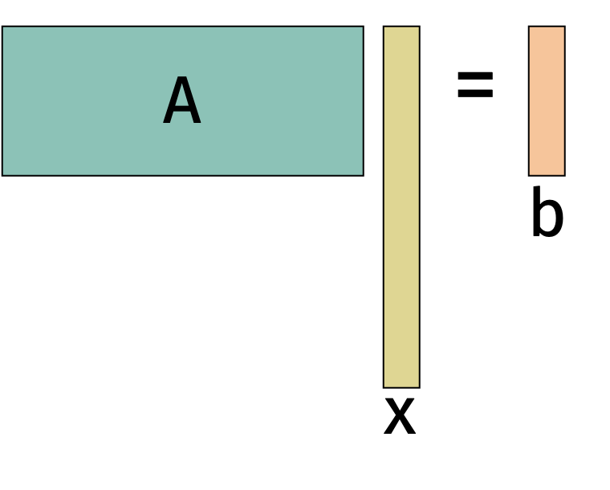
Because we can control so many coefficients in \(\mathbf{x}\), there are likely many solutions that make the mean squared error zero. We will make the problem more interesting by assuming that \(\mathbf{x}\) has a special structure. In particular, we will assume that \(\mathbf{x}\) is \(k\)-sparse i.e., there are at most \(k\) non-zero entries in \(\mathbf{x}\). Typically, \(k \ll d\).
Since we know we can recover \(\mathbf{x}\), the question becomes how many measurements i.e., rows in \(\mathbf{A}\) do we need to recover it?
We’ll start with a trivial solution. Notice that if we make each row of \(\mathbf{A}\) a standard basis vector, then we can recover each entry of \(\mathbf{x}\) by observing the corresponding entry of \(\mathbf{b}\). Unfortunately, this approach requires that we have as many rows in \(\mathbf{A}\) as entries in \(\mathbf{x}\) which requires \(O(d)\) measurements and \(O(d^2)\) space to even store \(\mathbf{A}\).
Today, we will do better by coming up with an algorithm which makes \(O(k \log k)\) measurements. This should be surprising because, while we know that \(\mathbf{x}\) is \(k\)-sparse, we don’t know which \(k\) entries are non-zero.
Applications
Photography: Typically, cameras acquire images by measuring the intensity of light with one sensor per pixel. We could instead imagine a camera that measures the intensity of light with just one sensor. If the pixel intensities are \(\mathbf{x} \in \mathbb{R}^n\), then the single pixel returns \[ b = \frac1{n} \sum_{i=1}^n x_i = \begin{bmatrix} \frac1{n} & \frac1{n} & \cdots & \frac1{n} \end{bmatrix} \mathbf{x} \begin{bmatrix} x_1 \\ x_2 \\ \vdots \\ x_n \end{bmatrix} \] which is not very much information about the image. But we can get more information from other linear measurements via masking.
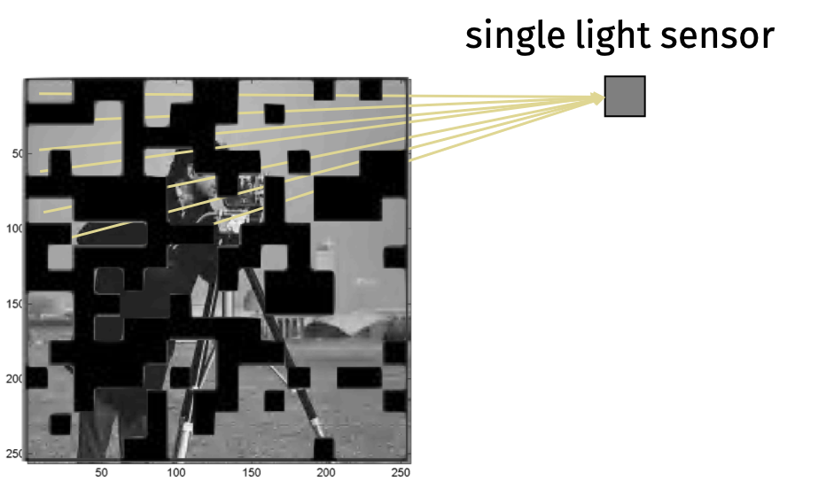
Let \[ b_i = \frac1{n} \sum_{j \in S_i} x_j = \begin{bmatrix} 0 & \frac1{n} & \cdots & 0 \end{bmatrix} \begin{bmatrix} x_1 \\ x_2 \\ \vdots \\ x_n \end{bmatrix}. \] If we take enough measurements \(b_i\), then we can recover the whole image.
There are applications of this approach in imaging outside of the visible spectrum, microscopy, and other scientific imaging. The theory we will discuss does not exactly describe these problems but it has been very valuable in modeling them.
Medical Imaging (MRI): How do we measure entries of the Fourier transform \(\mathbf{Fx}\) for an MRI? We blast the body with sound waves of varying frequency. If we can reduce the number of measurements, we can reduce the time the patient spends in the machine and the energy use of the procedure.
Geophysics: How do we measure entries of the Fourier transform \(\mathbf{Fx}\) for geophysical analysis? We blast the ground with sound waves of varying frequency (e.g.,using airguns, controlled explosions, and vibrations from drilling). If we can reduce the number of measurements, we can make the data acquisition process cheaper and less disruptive.
Fourier Transforms
The main roadblock to directly applying the sparse recovery problem to the examples we described is that the data we measure is not necessarily sparse. For example, an image is not sparse if we represent as a vector of pixel intensities. However, we can often represent the data in a different basis where it is sparse.
The Fourier transform is a linear transformation that decomposes data into frequencies. By the Uncertainty Principle in harmonic analysis, a vector and its Fourier transform cannot both be too dense. The figure below gives an example. On the left we have data with many non-zero entries and, on the left, we have the Fourier transform of the data which is (close to) sparse.
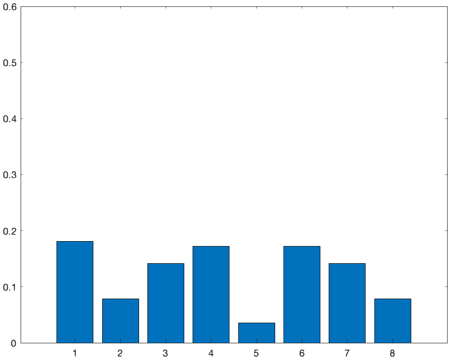 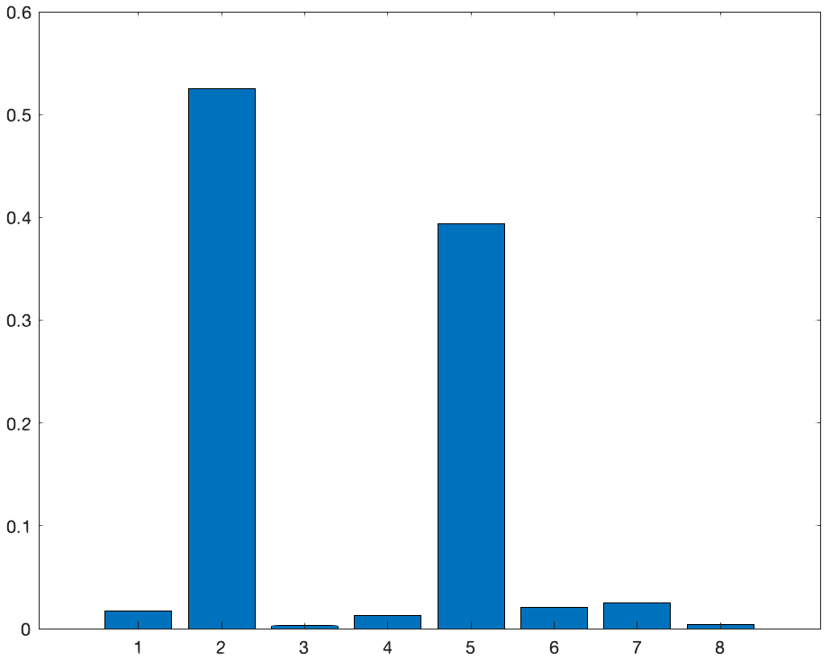
Generally, we can take dense data and make it sparse by applying the Fourier transform. The Fourier transform is closely related to the Hadamard matrix we analyzed for the Fast JL Transform algorithm. The discrete Fourier transform (DFT) \(\mathbf{F} \in \mathbb{C}^{n \times n}\) is defined on complex numbers \[ \mathbf{F}_{j,k} = e^{-2\pi i \frac{j k}{n}} \] where \(i\) is the imaginary unit. The DFT is a unitary matrix so \(\mathbf{F}^* \mathbf{F} = \mathbf{I}\) where \(\mathbf{F}^*\) is the conjugate transpose of \(\mathbf{F}\).
Using the same divide-and-conquer algorithm as the Hadamard matrix, we can compute \(\mathbf{Fy}\) the DFT of the vector \(\mathbf{y}\) in \(O(n \log n)\) time.
The real part of the \(j,k\) entry is \(\cos(2\pi j k)\) so the \(j\)th row of \(\mathbf{F}\) looks like a cosine wave with frequency \(j\). Computing \(\mathbf{Fy}\) computes inner products of \(\mathbf{y}\) with many different frequencies, which can be used to decompose the vector into a sum of those frequencies.
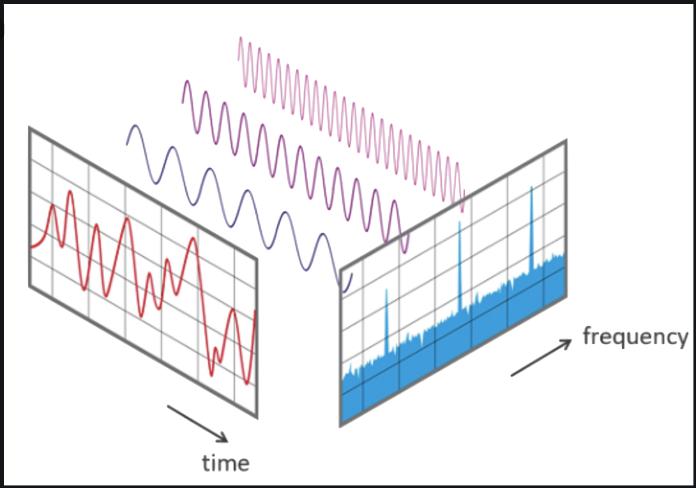
As we saw before, sampling does not preserve norms when \(\mathbf{y}\) has a few large entries. Before, the hard case was when \(\mathbf{y}\) had a few large entries and now the hard case is when \(\mathbf{y}\) has too many non-zero entries. Taking the Fourier transform, just like taking the Hadamard transform, eliminates the hard case without changing the norm. Because of this property, the Fourier transform is one of the central tools in sparse recovery (also sometimes called compressed sensing).
The goal in sparse recover is to recover a vector \(\mathbf{x}\) from linear measurements. We can choose \(\mathbf{A} \in \mathbb{R}^{m \times n}\) with \(m < n\). Assume we can access the measurement \(\mathbf{b} = \mathbf{Ax}\). We will try to recover \(\mathbf{x}\) from \(\mathbf{b}\).
Since \(m < n\), there are infinitely many vectors \(\mathbf{x}\) that satisfy \(\mathbf{Ax} = \mathbf{b}\).
Sparse Recovery
Now that we have a sense of the problem, we will discuss how to solve it. We want to recover \(\mathbf{x}\) from \(\mathbf{b} = \mathbf{Ax}\) under the assumption that \(\mathbf{x}\) is \(k\)-sparse i.e., it has at most \(k\) non-zero entries.
In this problem, we get to choose the matrix \(\mathbf{A}\) that we will use to measure \(\mathbf{x}\). Let’s consider the properties of \(\mathbf{A}\) that would allow us to recover \(\mathbf{x}\).
One property that would not allow us to recover \(\mathbf{x}\) is if \(\mathbf{A}\) has repeated columns. Then we cannot distinguish between the entries of \(\mathbf{x}\) that correspond to those columns.
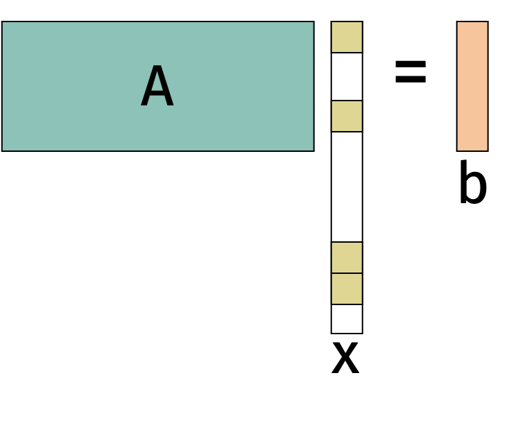
There are several ways to formalize the property that \(\mathbf{A}\) allows us to recover \(\mathbf{x}\):
\(\mathbf{A}\) has Kruskal rank \(r\) if all sets of \(r\) columns are linearly independent.
\(\mathbf{A}\) is \(\mu\)-incoherent if \(|\mathbf{A}_{i}^\top \mathbf{A}_j | \leq \mu \|\mathbf{A}_i \|_2 \| \mathbf{A}_j \|_2\) for all distinct columns \(i,j\).
Today, we will consider matrices that satisfy the RIP.
Restricted Isometry Property (RIP): \(\mathbf{A}\) satisfies the \((q,\epsilon)\)-Restricted Isometry Property (RIP) if \((1-\epsilon) \| \mathbf{x} \|_2^2 \leq \| \mathbf{Ax} \|_2^2 \leq (1+\epsilon) \| \mathbf{x} \|_2^2\) for all \(q\)-sparse vectors \(\mathbf{x}\).
Notice that RIP is a Johnson-Lindenstrauss type condition. However, it is not quite the same as the JL Lemma because it applies to all \(q\)-sparse vectors instead of a discrete set of vectors or all vectors in a subspace.
A natural question is whether we can find matrices that satisfy RIP and how difficult it is to find them.
Random Matrices
Matrices that are satisfy RIP are not too rare. In fact, random Johnson-Lindenstrauss matrices (e.g., Gaussian, sign, sparse) with \(m=O\left(\frac{k \log(n/k}{\epsilon^2}\right)\) rows are \((q, \epsilon)\)-RIP.
We will show this by applying the JL subspace embedding theorem to a collection of subspaces.
We’ll use the following subspace embedding theorem that we proved previously.
Subspace Embedding Theorem Let \(\mathcal{U} \subset \mathbb{R}^n\) be a \(k\)-dimensional subspace. If \(\mathbf{\Pi}\) is chosen from any distribution satisfying the distributional JL Lemma, then with probability \(1-\delta\), \[ (1-\epsilon) \| \mathbf{y} \|_2^2 \leq \| \mathbf{\Pi} \mathbf{y} \|_2^2 \leq (1+\epsilon) \| \mathbf{y} \|_2^2 \] for all \(\mathbf{y} \in \mathcal{U}\) as long as \(m = O \left( \frac{k + \log(1/\delta)}{\epsilon^2} \right)\).
We will use union bound to apply this theorem to a collection of linear subspaces. Let \(\mathcal{S}_k = \{ \mathbf{x} \in \mathbb{R}^n : \|\mathbf{x}\|_0 \leq k \}\) be the set of all \(k\)-sparse vectors. We can write \(\mathcal{S}_k\) as a union of disjoint \(k\)-dimensional subspaces \(\mathcal{S}_k = \mathcal{U}_1 \cup \ldots \mathcal{U}_T\). The number of subspaces \(T\) is the number of ways to choose \(k\) coordinates from \(n\) coordinates, which is \(T = \binom{n}{k}\). Consider all \(k\)-sparse vectors \(\mathbf{x} \in \mathbb{R}^n\). We can partition the set by which coordinates are non-zero. For one set of non-zero coordinates, we only need to preserve the basis vectors for that set of coordinates. Therefore \(T\) is the number of ways to choose \(q\) coordinates from \(n\) coordinates, which is \(T = \binom{n}{k}\).
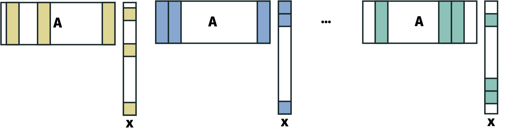 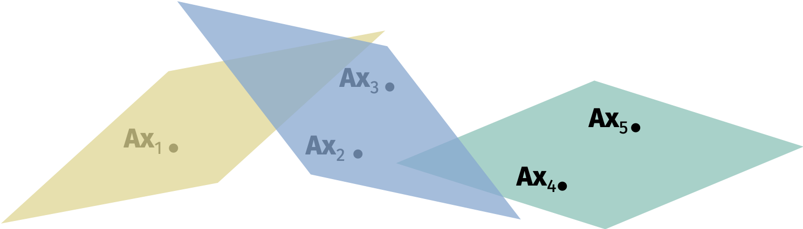
We’ll apply union bound to all \(T\) subspaces. In particular, we’ll set \(\delta' = \frac{\delta}{T}\) and apply the subspace embedding theorem with failure probability \(\delta'\). It remains to analyze \[\begin{align*} \log(1/\delta') &= \log(1/\delta) + \log(T) \\ &= \log(1/\delta) + \log \left( \frac{n!}{k!(n-k)!} \right) \\ &\approx \log(1/\delta) + k \log \left( \frac{n}{k} \right). \end{align*}\] We won’t prove the approximate equality but you can check that \[\begin{align*} \left( \frac{n}{k} \right)^k \leq \binom{n}{k} \leq \left( \frac{en}{k} \right)^k. \end{align*}\]
Then we have the following.
Theorem: If \(\mathbf{\Pi} \in \mathbb{R}^{m \times n}\) is chosen from any distribution \(\mathcal{D}\) satisfying the distributional JL lemma, then with probability \(1-\delta\), \[ (1-\epsilon) \| \mathbf{x} \|_2^2 \leq \| \mathbf{\Pi x} \|_2^2 \leq (1+\epsilon) \| \mathbf{x} \|_2^2 \] for all \(k\)-sparse \(\mathbf{x}\) as long as \(m = O\left( \frac{k\log(n) + \log(1/\delta)}{\epsilon^2} \right)\).
Inefficient Algorithm
Now that we have established what type of matrices satisfy RIP and how to find them, we will discuss how to recover \(\mathbf{x}\) from \(\mathbf{b} = \mathbf{Ax}\).
By the next theorem, there is a simple algorithm that recovers \(\mathbf{x}\) from \(\mathbf{b}\) exactly.
\(\ell_0\)-Minimization Theorem: Suppose we are given \(\mathbf{A} \in \mathbb{R}^{m \times n}\) and \(\mathbf{b} = \mathbf{Ax}\) for an unknown \(k\)-sparse \(\mathbf{x} \in \mathbb{R}^n\). If \(\mathbf{A}\) is \((2k,\epsilon)\)-RIP for any \(\epsilon< 1\), then \(\mathbf{x}\) is the unique minimizer of \[ \min_{\mathbf{z} \in \mathbb{R}^d} \| \mathbf{z} \|_0 \quad \textrm{subject to} \quad \mathbf{Az} = \mathbf{b}. \]
Proof: Consider any $ with \(\mathbf{Ay} = \mathbf{b}\) and \(\| \mathbf{y} \|_0 \leq \| \mathbf{x} \|_0 \leq k\).
We know that \[\begin{align*} \mathbf{A}(\mathbf{y} - \mathbf{x}) = \mathbf{Ay} - \mathbf{Ax} = \mathbf{b} - \mathbf{b} = 0 \end{align*}\] so \(\| \mathbf{A(y-x)} \|_2 = 0\). But \(\mathbf{y-x}\) is \(2k\)-sparse and \(\mathbf{A}\) is \((2k,\epsilon)\)-RIP so \[\begin{align*} (1-\epsilon) \| \mathbf{y-x} \|_2^2 \leq \| \mathbf{A(y-x)} \|_2^2 \leq (1+\epsilon) \| \mathbf{y-x} \|_2^2. \end{align*}\] So then \(\| \mathbf{y-x}\|_2 \leq 0\) and we must have \(\mathbf{y} = \mathbf{x}\).
The theorem establishes that information theoretically we can recover \(\mathbf{x}\) from \(\mathbf{b}\). However, solving the \(\ell_0\)-minimization problem is computationally difficult. In fact, (one of) the best algorithms we know that solves it is to try all possible \(\binom{d}{k}\) subsets of \(\mathbf{x}\) and choose the one that minimizes \(\| \mathbf{Ax} - \mathbf{b} \|_2\). This algorithm takes \(O(d^k)\) time which is not practical for large \(d\). We will address a faster method shortly.
Efficient Algorithm
Solving the \(\ell_0\)-minimization problem is computationally difficult. Thankfully, we can relax the problem to a convex optimization problem that is exponentially faster in \(k\) and gives the same solution.
\(\ell_1\)-Minimization Theorem: Suppose we are given \(\mathbf{A} \in \mathbb{R}^{m \times n}\) and \(\mathbf{b} = \mathbf{Ax}\) for an unknown \(k\)-sparse \(\mathbf{x} \in \mathbb{R}^n\). If \(\mathbf{A}\) is \((2k,\epsilon)\)-RIP for any \(\epsilon< .17\), then \(\mathbf{x}\) is the unique minimizer of \[ \min_{\mathbf{z} \in \mathbb{R}^d} \| \mathbf{z} \|_1 \quad \textrm{subject to} \quad \mathbf{Az} = \mathbf{b}. \]
Before we prove the theorem, let’s get some intuition for why it holds. The \(\ell_1\)-norm is the sum of the absolute values of the entries of \(\mathbf{z}\). As depicted on the left figure below, the sets with equal \(\ell_1\)-norm form a diamond. At the same time, the constraint that \(\mathbf{Az} = \mathbf{b}\) is a hyperplane that is random (since \(\mathbf{A}\) is random). Then, with high probability, the intersection of the constraint and the objective will be a vertex of the diamond which corresponds to a sparse solution.
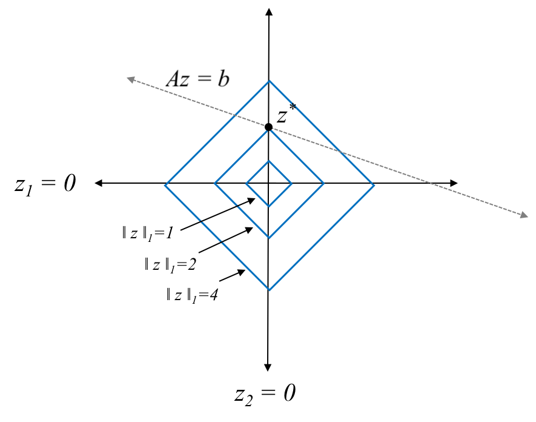 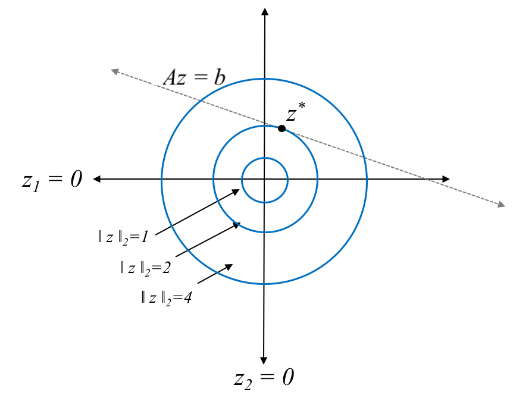
The same intuition does not hold for the \(\ell_2\)-norm. The sets with equal \(\ell_2\)-norm form a sphere. So the intersection of the constraint and the objective will be a random point on the circle which corresponds to a dense solution.
We will next prove the \(\ell_1\)-minimization theorem. There are two tools that we’ll use.
Tool 1: For any vectors \(\mathbf{a}\) and \(\mathbf{b}\), \[\begin{align*} \|\mathbf{a+b} \| \geq \| \mathbf{a} \| - \| \mathbf{b} \|. \end{align*}\] We can see this from the triangle inequality that \(\| \mathbf{x} + \mathbf{y} \| \leq \| \mathbf{x} \| + \| \mathbf{y} \|\). Plugging in \(\mathbf{x} = \mathbf{a} - \mathbf{b}\) and \(\mathbf{y} = \mathbf{b}\) then rearranging gives the result. Notice that this works for any norm.
Tool 2: For any vector \(k\)-sparse vector \(\mathbf{w}\), we have \[\begin{align*} \|\mathbf{w}\|_2 \leq \| \mathbf{w} \|_1 \leq \sqrt{k} \| \mathbf{w} \|_2. \end{align*}\] The first inequality follows from the definition of the \(\ell_2\)-norm and the second inequality follows from the Cauchy-Schwarz inequality. In particular, \[\begin{align*} \| \mathbf{w} \|_2^2 = \sum_{i=1}^d w_i^2 \leq \sum_{i=1}^d w_i^2 \sum_{i=1}^d \sum{j=1}^d |w_i| |w_j| = \sum_{i=1}^d |w_i| \sum_{j=1}^d |w_j| = \| \mathbf{w} \|_1^2 \end{align*}\] and \[\begin{align*} \| \mathbf{w} \|_1^2 = \sum_{i=1}^d |w_i|^2 \mathbb{1}[w_i \neq 0] \leq \left( \sum_{i=1}^d |w_i|^2 \right) \left( \sum_{j: w_j \neq 0}1 \right) = k \| \mathbf{w} \|_2^2 \end{align*}\] where the inequality follows by Cauchy-Schwarz.
With these tools, we are now ready to prove the \(\ell_1\)-minimization theorem.
Proof: By way of contradiction, we will assume that \(\mathbf{x}\) is not the optimal solution. Then there exists some non-zero \(\mathbf{\Delta}\) such that \(\| \mathbf{x} + \mathbf{\Delta} \|_1 \leq \| \mathbf{x} \|_1\) and \(\mathbf{A}(\mathbf{x} + \mathbf{\Delta}) = \mathbf{b}\). The challenge is that we can not assume that \(\mathbf{\Delta}\) is sparse. We will argue that \(\mathbf{\Delta}\) is approximately sparse.
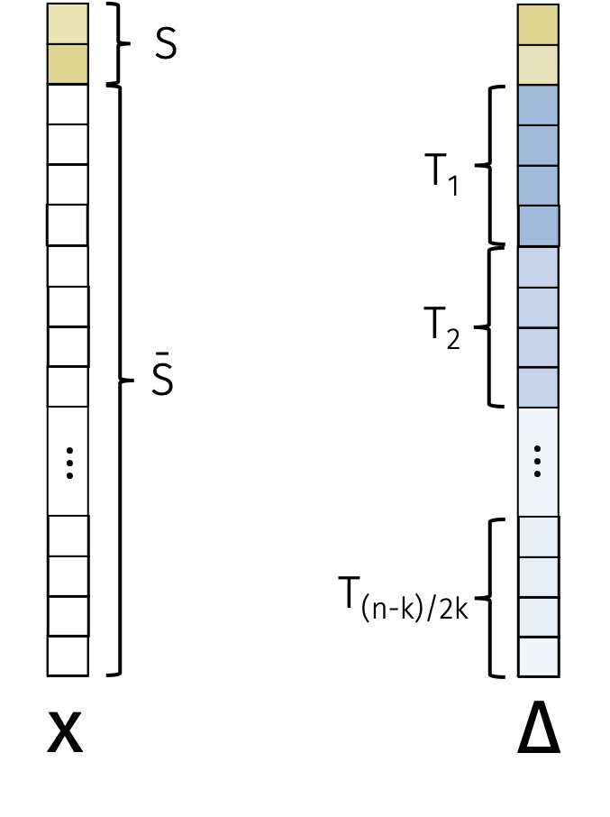
Let \(S\) be the set of \(k\) non-zero indices in \(\mathbf{x}\). Let \(T_1\) be the set of \(2k\) indices not in \(S\) with the largest absolute values in \(\mathbf{\Delta}\). Let \(T_2\) be the set of \(2k\) indices not in \(S \cup T_1\) with the next largest magnitudes, et cetera.
We will first show that \(\mathbf{\Delta}\) is approximately sparse in the \(\ell_1\)-norm. To see this, we can write
\[\begin{align*} \| \mathbf{x} \|_1 &\geq \| \mathbf{x} + \mathbf{\Delta} \|_1 \\ &= \| \mathbf{x}_S + \mathbf{\Delta}_S \|_1 + \| \mathbf{\Delta}_{\bar{S}} \|_1 \\ &\geq \| \mathbf{x}_S \|_1 - \| \mathbf{\Delta}_S \|_1 + \| \mathbf{\Delta}_{\bar{S}} \|_1 \end{align*}\] where the first inequality follows from assumption, the first equality follows since \(\mathbf{x}\) only has non-zero entries on \(S\), and the second inequality follows from Tool 1. Rearranging, we have that \(\|\mathbf{\Delta}_S\|_1 \geq \| \mathbf{\Delta}_{\bar{S}} \|_1\).
Next, we will show that \(\mathbf{\Delta}\) is approximately sparse in the \(\ell_2\)-norm. To see this, we can write \[\begin{align*} \| \mathbf{\Delta}_S\|_2 \geq \frac1{\sqrt{k}} \| \mathbf{\Delta}_S \|_1 \geq \frac1{\sqrt{k}} \| \mathbf{\Delta}_{\bar{S}} \|_1 = \frac1{\sqrt{k}} \sum_{j\geq 1} \| \mathbf{\Delta}_{T_j} \|_1 \end{align*}\] where the first inequality follows from Tool 2 and the second inequality follows from the previous \(\ell_1\)-norm sparsity result. Since there are \(2k\) indices in \(T_j\), we know that $ | _{T_j} |1 2k ({T_j})$. Simultaneously, we know that \(\| \mathbf{\Delta}_{T_{j+1}} \|_2^2 \leq 2k \max(\mathbf{\Delta}_{T_{j+1}})^2\) so \(\| \mathbf{\Delta}_{T_{j+1}} \|_2 \leq \sqrt{2k} \max(\mathbf{\Delta}_{T_{j+1}})\). Combining the last two inequalities, we have that \[\begin{align*} \sqrt{2k} \| \mathbf{\Delta}_{T_{j+1}} \|_2 \leq 2k \max(\mathbf{\Delta}_{T_{j+1}}) \leq \| \mathbf{\Delta}_{T_j} \|_1. \end{align*}\] Plugging this inequality back in, we know that \[\begin{align*} \| \mathbf{\Delta}_S \|_2 \geq \sqrt{2} \sum_{j \geq 2} \| \mathbf{\Delta}_{T_j} \|_2. \end{align*}\]
Finally, we will show the contradiction. We know $( + ) = and \(\mathbf{A} \mathbf{x} = \mathbf{b}\) so \(\mathbf{A} \mathbf{\Delta} = 0\). By the \((3k, \epsilon)\)-RIP, we know that \[\begin{align*} 0 &= \| \mathbf{A \Delta} \|_2 \\&= \| \mathbf{A \Delta}_{S \cup T_1} \|_2 - \sum_{j \geq 2} \| \mathbf{A \Delta}_{\bar{S}} \|_2 \\&\geq (1-\epsilon) \| \mathbf{\Delta}_{S \cup T_1} \|_2 - (1+\epsilon) \sum_{j \geq 2} \| \mathbf{\Delta}_{T_j} \|_2 \\&\geq (1-\epsilon) \| \mathbf{\Delta}_{S} \|_2 - \frac{(1+\epsilon)}{\sqrt{2}} \| \mathbf{\Delta}_{S} \|_2 \\&= \left( (1-\epsilon) - \frac{(1+\epsilon)}{\sqrt{2}} \right) \| \mathbf{\Delta}_{S} \|_2 \end{align*}\] But this is a contradiction since \(\left( (1-\epsilon) - \frac{(1+\epsilon)}{\sqrt{2}} \right) > 0\) for \(\epsilon < .17\).
So we know that a solution to the \(\ell_1\)-minimization problem recovers \(\mathbf{x}\). We can solve the \(\ell_1\)-minimization problem in polynomial time using linear programming or, alternatively, running gradient descent with an \(\ell_1\)-regularization term.